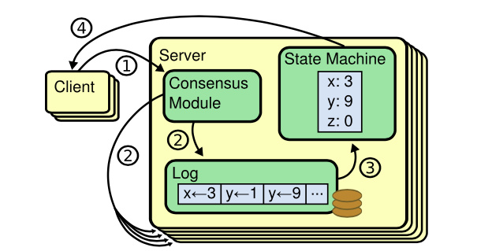
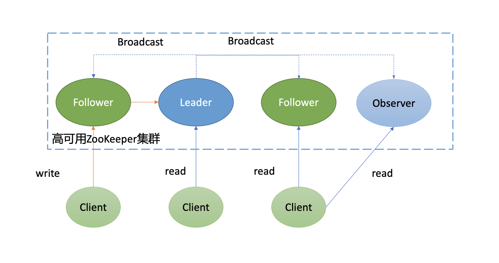
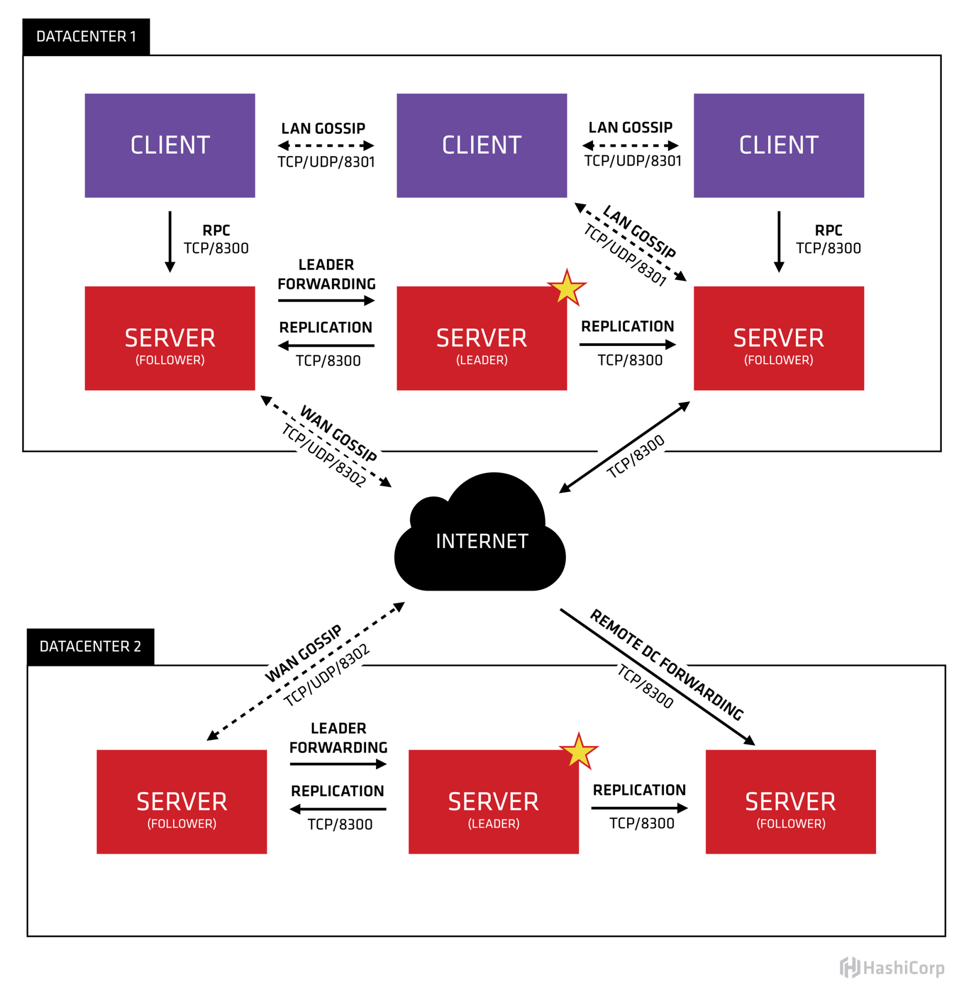
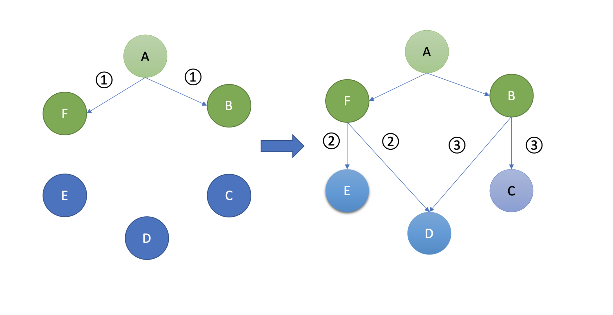
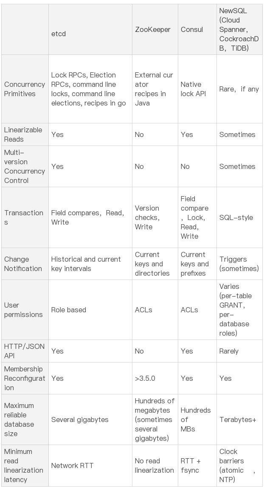
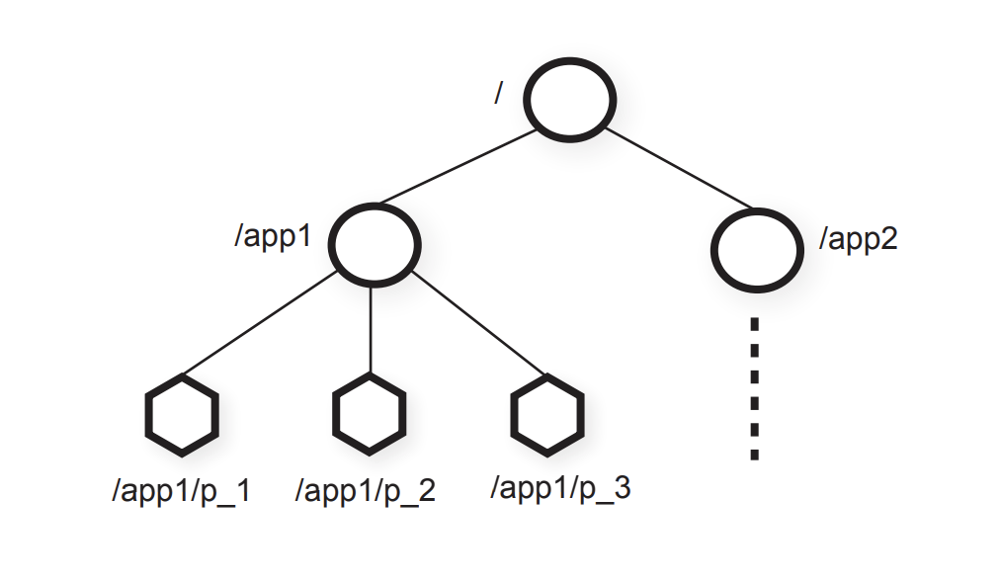

- 00 开篇词 为什么你要学习etcd_.md.html
- 01 etcd的前世今生：为什么Kubernetes使用etcd？.md.html
- 02 基础架构：etcd一个读请求是如何执行的？.md.html
- 03 基础架构：etcd一个写请求是如何执行的？.md.html
- 04 Raft协议：etcd如何实现高可用、数据强一致的？.md.html
- 05 鉴权：如何保护你的数据安全？.md.html
- 06 租约：如何检测你的客户端存活？.md.html
- 07 MVCC：如何实现多版本并发控制？.md.html
- 08 Watch：如何高效获取数据变化通知？.md.html
- 09 事务：如何安全地实现多key操作？.md.html
- 10 boltdb：如何持久化存储你的key-value数据？.md.html
- 11 压缩：如何回收旧版本数据？.md.html
- 12 一致性：为什么基于Raft实现的etcd还会出现数据不一致？.md.html
- 13 db大小：为什么etcd社区建议db大小不超过8G？.md.html
- 14 延时：为什么你的etcd请求会出现超时？.md.html
- 15 内存：为什么你的etcd内存占用那么高？.md.html
- 16 性能及稳定性（上）：如何优化及扩展etcd性能？.md.html
- 17 性能及稳定性（下）：如何优化及扩展etcd性能_.md.html
- 18 实战：如何基于Raft从0到1构建一个支持多存储引擎分布式KV服务？.md.html
- 19 Kubernetes基础应用：创建一个Pod背后etcd发生了什么？.md.html
- 20 Kubernetes高级应用：如何优化业务场景使etcd能支撑上万节点集群？.md.html
- 21 分布式锁：为什么基于etcd实现分布式锁比Redis锁更安全？.md.html
- 22 配置及服务发现：解析etcd在API Gateway开源项目中应用.md.html
- 23 选型：etcd_ZooKeeper_Consul等我们该如何选择？.md.html
- 24 运维：如何构建高可靠的etcd集群运维体系？.md.html
- 特别放送 成员变更：为什么集群看起来正常，移除节点却会失败呢？.md.html
- 结束语 搞懂etcd，掌握通往分布式存储系统之门的钥匙.md.html
- 捐赠
23 选型：etcd_ZooKeeper_Consul等我们该如何选择？
你好，我是唐聪。
在软件开发过程中，当我们需要解决配置、服务发现、分布式锁等业务痛点，在面对etcd、ZooKeeper、Consul、Nacos等一系列候选开源项目时，我们应该如何结合自己的业务场景，选择合适的分布式协调服务呢？
今天，我就和你聊聊主要分布式协调服务的对比。我将从基本架构、共识算法、数据模型、重点特性、容灾能力等维度出发，带你了解主要分布式协调服务的基本原理和彼此之间的差异性。
希望通过这节课，让你对etcd、ZooKeeper、Consul原理和特性有一定的理解，帮助你选型适合业务场景的配置系统、服务发现组件。
基本架构及原理
在详细和你介绍对比etcd、ZooKeeper、Consul特性之前，我们先从整体架构上来了解一下各开源项目的核心架构及原理。
etcd架构及原理
首先是etcd，etcd我们知道它是基于复制状态机实现的分布式协调服务。如下图所示，由Raft共识模块、日志模块、基于boltdb持久化存储的状态机组成。

以下是etcd基于复制状态机模型的写请求流程：
- client发起一个写请求（put x = 3）；
- etcdserver模块向Raft共识模块提交请求，共识模块生成一个写提案日志条目。若server是Leader，则把日志条目广播给其他节点，并持久化日志条目到WAL中；
- 当一半以上节点持久化日志条目后，Leader的共识模块将此日志条目标记为已提交（committed），并通知其他节点提交；
- etcdserver模块从Raft共识模块获取已经提交的日志条目，异步应用到boltdb状态机存储中，然后返回给client。
更详细的原理我就不再重复描述，你可以参考02读和03写两节原理介绍。
ZooKeeper架构及原理
接下来我和你简要介绍下ZooKeeper原理，下图是它的架构图。
如下面架构图所示，你可以看到ZooKeeper中的节点与etcd类似，也划分为Leader节点、Follower节点、Observer节点（对应的Raft协议的Learner节点）。同时，写请求统一由Leader处理，读请求各个节点都能处理。
不一样的是它们的读行为和共识算法。
- 在读行为上，ZooKeeper默认读可能会返回stale data，而etcd使用的线性读，能确保读取到反应集群共识的最新数据。
- 共识算法上，etcd使用的是Raft，ZooKeeper使用的是Zab。

那什么是Zab协议呢？
Zab协议可以分为以下阶段：
- Phase 0，Leader选举（Leader Election)。一个节点只要求获得半数以上投票，就可以当选为准Leader；
- Phase 1，发现（Discovery）。准Leader收集其他节点的数据信息，并将最新的数据复制到自身；
- Phase 2，同步（Synchronization）。准Leader将自身最新数据复制给其他落后的节点，并告知其他节点自己正式当选为Leader；
- Phase 3，广播（Broadcast）。Leader正式对外服务，处理客户端写请求，对消息进行广播。当收到一个写请求后，它会生成Proposal广播给各个Follower节点，一半以上Follower节点应答之后，Leader再发送Commit命令给各个Follower，告知它们提交相关提案；
ZooKeeper是如何实现的Zab协议的呢？
ZooKeeper在实现中并未严格按论文定义的分阶段实现，而是对部分阶段进行了整合，分别如下：
- Fast Leader Election。首先ZooKeeper使用了一个名为Fast Leader Election的选举算法，通过Leader选举安全规则限制，确保选举出来的Leader就含有最新数据， 避免了Zab协议的Phase 1阶段准Leader收集各个节点数据信息并复制到自身，也就是将Phase 0和Phase 1进行了合并。
- Recovery Phase。各个Follower发送自己的最新数据信息给Leader，Leader根据差异情况，选择发送SNAP、DIFF差异数据、Truncate指令删除冲突数据等，确保Follower追赶上Leader数据进度并保持一致。
- Broadcast Phase。与Zab论文Broadcast Phase一致。
总体而言，从分布式系统CAP维度来看，ZooKeeper与etcd类似的是，它也是一个CP系统，在出现网络分区等错误时，它优先保障的数据一致性，牺牲的是A可用性。
Consul架构及原理
了解完ZooKeeper架构及原理后，我们再看看Consul，它的架构和原理是怎样的呢？
下图是Consul架构图（引用自HashiCorp官方文档）。

从图中你可以看到，它由Client、Server、Gossip协议、Raft共识算法、两个数据中心组成。每个数据中心内的Server基于Raft共识算法复制日志，Server节点分为Leader、Follower等角色。Client通过Gossip协议发现Server地址、分布式探测节点健康状态等。
那什么是Gossip协议呢？
Gossip中文名称叫流言协议，它是一种消息传播协议。它的核心思想其实源自我们生活中的八卦、闲聊。我们在日常生活中所看到的劲爆消息其实源于两类，一类是权威机构如国家新闻媒体发布的消息，另一类则是大家通过微信等社交聊天软件相互八卦，一传十，十传百的结果。
Gossip协议的基本工作原理与我们八卦类似，在Gossip协议中，如下图所示，各个节点会周期性地选择一定数量节点，然后将消息同步给这些节点。收到消息后的节点同样做出类似的动作，随机的选择节点，继续扩散给其他节点。
最终经过一定次数的扩散、传播，整个集群的各个节点都能感知到此消息，各个节点的数据趋于一致。Gossip协议被广泛应用在多个知名项目中，比如Redis Cluster集群版，Apache Cassandra，AWS Dynamo。

了解完Gossip协议，我们再看看架构图中的多数据中心，Consul支持数据跨数据中心自动同步吗？
你需要注意的是，虽然Consul天然支持多数据中心，但是多数据中心内的服务数据并不会跨数据中心同步，各个数据中心的Server集群是独立的。不过，Consul提供了Prepared Query功能，它支持根据一定的策略返回多数据中心下的最佳的服务实例地址，使你的服务具备跨数据中心容灾。
比如当你的API网关收到用户请求查询A服务，API网关服务优先从缓存中查找A服务对应的最佳实例。若无缓存则向Consul发起一个Prepared Query请求查询A服务实例，Consul收到请求后，优先返回本数据中心下的服务实例。如果本数据中心没有或异常则根据数据中心间 RTT 由近到远查询其它数据中心数据，最终网关可将用户请求转发给最佳的数据中心下的实例地址。
了解完Consul的Gossip协议、多数据中心支持，我们再看看Consul是如何处理读请求的呢?
Consul支持以下三种模式的读请求：
- 默认（default）。默认是此模式，绝大部分场景下它能保证数据的强一致性。但在老的Leader出现网络分区被隔离、新的Leader被选举出来的一个极小时间窗口内，可能会导致stale read。这是因为Consul为了提高读性能，使用的是基于Lease机制来维持Leader身份，避免了与其他节点进行交互确认的开销。
- 强一致性（consistent）。强一致性读与etcd默认线性读模式一样，每次请求需要集群多数节点确认Leader身份，因此相比default模式读，性能会有所下降。
- 弱一致性（stale)。任何节点都可以读，无论它是否Leader。可能读取到陈旧的数据，类似etcd的串行读。这种读模式不要求集群有Leader，因此当集群不可用时，只要有节点存活，它依然可以响应读请求。
重点特性比较
初步了解完etcd、ZooKeeper、Consul架构及原理后，你可以看到，他们都是基于共识算法实现的强一致的分布式存储系统，并都提供了多种模式的读机制。
除了以上共性，那么它们之间有哪些差异呢？ 下表是etcd开源社区总结的一个详细对比项，我们就从并发原语、健康检查及服务发现、数据模型、Watch特性等功能上详细比较下它们功能和区别。

并发原语
etcd和ZooKeeper、Consul的典型应用场景都是分布式锁、Leader选举，以上场景就涉及到并发原语控制。然而etcd和ZooKeeper并未提供原生的分布式锁、Leader选举支持，只提供了核心的基本数据读写、并发控制API，由应用上层去封装。
为了帮助开发者更加轻松的使用etcd去解决分布式锁、Leader选举等问题，etcd社区提供了concurrency包来实现以上功能。同时，在etcdserver中内置了Lock和Election服务，不过其也是基于concurrency包做了一层封装而已，clientv3并未提供Lock和Election服务API给Client使用。 ZooKeeper所属的Apache社区提供了Apache Curator Recipes库来帮助大家快速使用分布式锁、Leader选举功能。
相比etcd、ZooKeeper依赖应用层基于API上层封装，Consul对分布式锁就提供了原生的支持，可直接通过命令行使用。
总体而言，etcd、ZooKeeper、Consul都能解决分布式锁、Leader选举的痛点，在选型时，你可能会重点考虑其提供的API语言是否与业务服务所使用的语言一致。
健康检查、服务发现
分布式协调服务的另外一个核心应用场景是服务发现、健康检查。
与并发原语类似，etcd和ZooKeeper并未提供原生的服务发现支持。相反，Consul在服务发现方面做了很多解放用户双手的工作，提供了服务发现的框架，帮助你的业务快速接入，并提供了HTTP和DNS两种获取服务方式。
比如下面就是通过DNS的方式获取服务地址：
$ dig @127.0.0.1 -p 8600 redis.service.dc1.consul. ANY
最重要的是它还集成了分布式的健康检查机制。与etcd和ZooKeeper健康检查不一样的是，它是一种基于client、Gossip协议、分布式的健康检查机制，具备低延时、可扩展的特点。业务可通过Consul的健康检查机制，实现HTTP接口返回码、内存乃至磁盘空间的检测。
Consul提供了多种机制给你注册健康检查，如脚本、HTTP、TCP等。
脚本是怎么工作的呢？介绍Consul架构时，我们提到过的Agent角色的任务之一就是执行分布式的健康检查。
比如你将如下脚本放在Agent相应目录下，当Linux机器内存使用率超过70%的时候，它会返回告警状态。
{
"check":
"id": "mem-util"
"name": "Memory utilization"
"args":
"/bin/sh"
"-c"
"/usr/bin/free | awk '/Mem/{printf($3/$2*100)}' | awk '{ print($0); if($1 > 70) exit 1;}'
]
"interval": "10s"
"timeout": "1s
}
}
相比Consul，etcd、ZooKeeper它们提供的健康检查机制和能力就非常有限了。
etcd提供了Lease机制来实现活性检测。它是一种中心化的健康检查，依赖用户不断地发送心跳续租、更新TTL。
ZooKeeper使用的是一种名为临时节点的状态来实现健康检查。当client与ZooKeeper节点连接断掉时，ZooKeeper就会删除此临时节点的key-value数据。它比基于心跳机制更复杂，也给client带去了更多的复杂性，所有client必须维持与ZooKeeper server的活跃连接并保持存活。
数据模型比较
从并发原语、健康检查、服务发现等维度了解完etcd、ZooKeeper、Consul的实现区别之后，我们再从数据模型上对比下三者。
首先etcd正如我们在07节MVCC和10节boltdb所介绍的，它是个扁平的key-value模型，内存索引通过B-tree实现，数据持久化存储基于B+ tree的boltdb，支持范围查询、适合读多写少，可容纳数G的数据。

如上图所示，它是一种层次模型，你可能已经发现，etcd v2的内存数据模型与它是一样的。ZooKeeper作为分布式协调服务的祖师爷，早期etcd v2的确就是参考它而设计的。
ZooKeeper的层次模型中的每个节点叫Znode，它分为持久性和临时型两种。
- 持久性顾名思义，除非你通过API删除它，否则它将永远存在。
- 临时型是指它与客户端会话绑定，若客户端会话结束或出现异常中断等，它都将被ZooKeeper server自动删除，被广泛应用于活性检测。
同时你创建节点的时候，还可以指定一个顺序标识，这样节点名创建出来后就具有顺序性，一般应用于分布式选举等场景中。
那ZooKeeper是如何实现以上层次模型的呢？
ZooKeeper使用的是内存ConcurrentHashMap来实现此数据结构，因此具有良好的读性能。但是受限于内存的瓶颈，一般ZooKeeper的数据库文件大小是几百M左右。
Consul的数据模型及存储是怎样的呢？
它也提供了常用key-value操作，它的存储引擎是基于Radix Tree实现的go-memdb，要求value大小不能超过512个字节，数据库文件大小一般也是几百M左右。与boltdb类似，它也支持事务、MVCC。
Watch特性比较
接下来我们再看看Watch特性的比较。
正在我在08节Watch特性中所介绍的，etcd v3的Watch是基于MVCC机制实现的，而Consul是采用滑动窗口实现的。Consul存储引擎是基于Radix Tree实现的，因此它不支持范围查询和监听，只支持前缀查询和监听，而etcd都支持。
相比etcd、Consul，ZooKeeper的Watch特性有更多的局限性，它是个一次性触发器。
在ZooKeeper中，client对Znode设置了Watch时，如果Znode内容发生改变，那么client就会获得Watch事件。然而此Znode再次发生变化，那client是无法收到Watch事件的，除非client设置了新的Watch。
其他比较
最后我们再从其他方面做些比较。
线性读。etcd和Consul都支持线性读，而ZooKeeper并不具备。
权限机制比较。etcd实现了RBAC的权限校验，而ZooKeeper和Consul实现的ACL。
事务比较。etcd和Consul都提供了简易的事务能力，支持对字段进行比较，而ZooKeeper只提供了版本号检查能力，功能较弱。
多数据中心。在多数据中心支持上，只有Consul是天然支持的，虽然它本身不支持数据自动跨数据中心同步，但是它提供的服务发现机制、Prepared Query功能，赋予了业务在一个可用区后端实例故障时，可将请求转发到最近的数据中心实例。而etcd和ZooKeeper并不支持。
小结
最后我们来小结下今天的内容。首先我和你从顶层视角介绍了etcd、ZooKeeper、Consul基本架构及核心原理。
从共识算法角度上看，etcd、Consul是基于Raft算法实现的数据复制，ZooKeeper则是基于Zab算法实现的。Raft算法由Leader选举、日志同步、安全性组成，而Zab协议则由Leader选举、发现、同步、广播组成。无论Leader选举还是日志复制，它们都需要集群多数节点存活、确认才能继续工作。
从CAP角度上看，在发生网络分区时，etcd、Consul、ZooKeeper都是一个CP系统，无法写入新数据。同时，etcd、Consul、ZooKeeper提供了各种模式的读机制，总体上可分为强一致性读、非强一致性读。
其中etcd和Consul则提供了线性读，ZooKeeper默认是非强一致性读，不过业务可以通过sync()接口，等待Follower数据追赶上Leader进度，以读取最新值。
接下来我从并发原语、健康检查、服务发现、数据模型、Watch特性、多数据中心比较等方面和你重点介绍了三者的实现与区别。
其中Consul提供了原生的分布式锁、健康检查、服务发现机制支持，让业务可以更省心，不过etcd和ZooKeeper也都有相应的库，帮助你降低工作量。Consul最大的亮点则是对多数据中心的支持。
最后如果业务使用Go语言编写的，国内一般使用etcd较多，文档、书籍、最佳实践案例丰富。Consul在国外应用比较多，中文文档及实践案例相比etcd较少。ZooKeeper一般是Java业务使用较多，广泛应用在大数据领域。另外Nacos也是个非常优秀的开源项目，支持服务发现、配置管理等，是Java业务的热门选择。
思考题
好了，这节课到这里也就结束了，最后我给你留了一个思考题。
越来越多的业务要求跨可用区乃至地区级的容灾，如果你是核心系统开发者，你会如何选型合适的分布式协调服务，设计跨可用区、地区的容灾方案呢？ 如果选用etcd，又该怎么做呢?
感谢你阅读，也欢迎你把这篇文章分享给更多的朋友一起阅读。
© 2019 - 2023 Liangliang Lee. Powered by gin and hexo-theme-book.